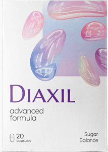

Reklama
Reklama


Dom Zdrowie Cukier we krwi
Autor Norbert Janik |


Poziom cukru we krwi jest głównym problemem dla osób z cukrzycą. Wysoki poziom cukru we krwi, znany jako hiperglikemia, występuje, gdy poziom cukru we krwi danej osoby wynosi ponad 180 miligramów na decylitr (mg / dL).
Czy wiecie, że zaburzony poziom cukru we krwi może mieć negatywne konsekwencje dla zdrowia i jakości życia dla "przed-diabetyków", którzy odczuwają objawy, nawet o tym nie wiedząc?
W tym artykule przedstawiamy 4 najważniejsze sekrety obniżania poziomu cukru we krwi.
Dlaczego kontrola poziomu cukru we krwi jest ważna?

Utrzymywanie poziomu cukru we krwi w docelowych wartościach może pomóc uniknąć problemów zdrowotnych, związanych z wysokim poziomem cukru we krwi.
Z biegiem czasu niezdrowy poziom cukru we krwi może uszkodzić małe i duże naczynia krwionośne w różnych narządach i układach, co prowadzi do poważnych konsekwencji, które obejmują: zaburzenia widzenia i ślepota, owrzodzenia stóp, infekcje i amputacje, niewydolność nerek i dializa, zawał serca i udar mózgu, choroby obwodowego układu naczyniowego i uszkodzenie układu nerwowego prowadzące do bólu i osłabienia.
Spójrzcie na te zadziwiające statystyki: do 90% osób w Polsce ma nieprawidłowy poziom cukru we krwi. Czujesz się głodny bardziej, niż normalnie? Czujesz większe pragnienie, niż zwykle? Czy czujesz ból w górnej części nóg lub czujesz, że twoje kostki i stopy są spuchnięte? Jeśli tak, to istnieje duża szansa, że będziesz cierpieć z powodu konsekwencji zwiększonego poziomu cukru we krwi.
Utrzymując poziom cukru we krwi poniżej 100 mg / dL przed posiłkami i poniżej 180 mg / dL po posiłkach, można znacznie zmniejszyć ryzyko wystąpienia działań niepożądanych związanych z zaburzonym poziomem cukru we krwi.
Jak obniżyć poziom cukru we krwi

Oto 4 najlepsze sposoby na obniżenie wysokiego poziomu cukru we krwi i zmniejszenie ryzyka powikłań:
1 Zmniejsz spożycie węglowodanów
Naukowcy przeprowadzili badania, które pokazują, że spożywanie pokarmów o niskiej zawartości węglowodanów i wysokiej zawartości białka obniża poziom cukru we krwi.
Organizm rozkłada węglowodany na cukry, które organizm wykorzystuje jako energię. Niektóre węglowodany są niezbędne w diecie. Jednak dla wielu osób (zwłaszcza tych z cukrzycą) przyjmowanie zbyt dużej ilości węglowodanów może spowodować nadmierny skok poziomu cukru we krwi.
Zmniejszenie ilości spożywanych węglowodanów, zmniejsza oscylację cukru we krwi.
2 Jedz właściwe węglowodany
Dwa główne rodzaje węglowodanów to: proste i złożone; różnie wpływają one na poziom cukru we krwi.
Węglowodany proste składają się głównie z jednego rodzaju cukru. Znajdują się w żywności, takiej jak biały chleb, makaron i słodycze. Organizm rozkłada te węglowodany na cukry bardzo szybko, co powoduje, że poziom cukru we krwi szybko rośnie.
Węglowodany złożone składają się z trzech lub więcej rodzajów cukrów, które są ze sobą połączone. Ponieważ wiązania chemiczne między tymi rodzajami cukrów są złożone, organizm potrzebuje więcej czasu, aby je rozbić.
W rezultacie cukier jest uwalniany do organizmu stopniowo, co oznacza, że poziom cukru we krwi nie wzrasta szybko po jedzeniu. Przykłady węglowodanów złożonych to całe ziarna i słodkie ziemniaki.
3 Wybieraj produkty o niskim indeksie glikemicznym
Indeks glikemiczny mierzy i szereguje różne produkty spożywcze w zależności od tego, w jaki sposób powodują wzrost poziomu cukru we krwi. Badania pokazują, że przestrzeganie diety o niskim indeksie glikemicznym zmniejsza ryzyko szybkich skoków poziomu cukru we krwi.
Żywność o niskim indeksie glikemicznym posiada wartość niższą od 55. Przykładami żywności o niskim indeksie glikemicznym są: słodkie ziemniaki, komosa ryżowa, rośliny strączkowe, mleko o niskiej zawartości tłuszczu, zielone warzywa liściaste, warzywa nieskrobiowe, orzechy i nasiona, mięso i ryby.
4 Regularne spożycie suplementów kontroli cukru we krwi
Suplementy, których celem jest utrzymanie poziomu cukru we krwi, takie jak często pojawiają się w mediach i nie jest to przypadek.
Wykonany z naturalnych, klinicznie przetestowanych składników wykazał skuteczność w stabilizowaniu poziomu cukru we krwi. Główne korzyści z przyjmowania suplementów obejmują wspieranie zdrowego funkcjonowania metabolizmu, stymulowanie zdrowego metabolizmu węglowodanów i lipidów oraz utrzymanie zdrowego poziomu cukru we krwi.
Dodatkową zaletą jest to, że pomaga on w utracie wagi, ponieważ wysoki poziom cukru we krwi powoduje uwalnianie nadmiaru insuliny, co zapobiega spalaniu tłuszczu przez organizm.
Najważniejsze jest to, że zażywanie jest łatwe. Wystarczy wziąć 1 kapsułkę dwa razy dziennie, rano i wieczorem. Są to kapsułki na bazie roślin, więc nie potrzeba recepty.
Co jeszcze należy wiedzieć?
W skrócie? Jeśli cierpisz z powodu szkodliwych skutków wysokiego poziomu cukru we krwi, należy kupić jak najszybciej
Potrzebujesz więcej informacji? Oto więcej informacji o tym, dlaczego jest tak świetny:
Jest CAŁKOWICIE naturalny.
to całkowicie naturalne kapsułki
, który zawierać
mieszankę ekstraktów roślinnych. Nie wymaga recepty.
Gwarantowane działanie.
posiada 100% gwarancję satysfakcji co oznacza, że
nie masz nic do stracenia.
Gdzie go kupić?
Nie daj się nabrać na tanie podróbki w Internecie. Odwiedź ich stronę internetową, aby kupić prawdziwy teraz.
Przestań marnować swoje pieniądze. Przejmij kontrolę już dziś.
Jeśli wysoki poziom cukru we krwi powoduje frustrację i obniża jakość Twojego życia, potrzebujesz lepszego rozwiązania. Przejmij kontrolę i kup .
Specjalna promocja dla naszych czytelników
Aktualizacja: Dostępnych jest tylko 20 opakowań.
Oferta specjalna kończy się za:
Otrzymaj 3 opakowania za darmo
Oferta wyłącznie dla naszych czytelników
Otrzymaj darmowe opakowaniaPowiązane artykuły
Naturalny preparat do utrzymania poziomu cukru we krwi.
Żyj bardziej aktywnym życiem z ciśnieniem krwi 80/120.

Idealna dieta, aby utrzymać cukier pod kontrolą.
Komentarze
347 komentarzy

Oliwia Najlepsze komentarze
Lubię to uczucie w nogach! Przez długi czas było mi naprawdę ciężko. Zapomniałam, jak to jest, gdy moje nogi są zdrowe.
Odpowiedz • Polub • Obserwuj post

Grzegorz • 172 śledzących
Od wielu miesięcy walczę z wysokim poziomem cukru we krwi i wiedziałem, że niedługo będę zmuszony brać leki, aby to normalizować. Byłem bardzo szczęśliwy, kiedy udało mi się to uregulować samodzielnie.
Odpowiedz • Polub • Obserwuj post

Józefa • 122 śledzących
Mogę chodzić po domu i podwórku z łatwością, czego nie mogłam 2 miesiące temu, ponieważ byłem prawie przykuta do łóżka z powodu drętwienia nóg
Odpowiedz • Polub • Obserwuj post

Oliwia • 67 śledzących
Lubię ciepło, oj lubię! Ze względu na słabe krążenie, moje nogi i ręce były stale zimne przez cały dzień. A teraz ten problem zniknął.
Odpowiedz • Polub • Obserwuj post
Henryk • 49 śledzących
Zagrałem pierwszy raz od 10 lat. Nigdy nie sądziłem, że moje nogi będą na tyle zdrowe, by móc znowu grać. Na szczęście się myliłem.
Odpowiedz • Polub • Obserwuj post
Emilia • 38 śledzących
Znowu czuję się normalnie. Moje nogi wyglądają normalnie i czuję się o wiele lepiej niż wcześniej.
Odpowiedz • Polub • Obserwuj post